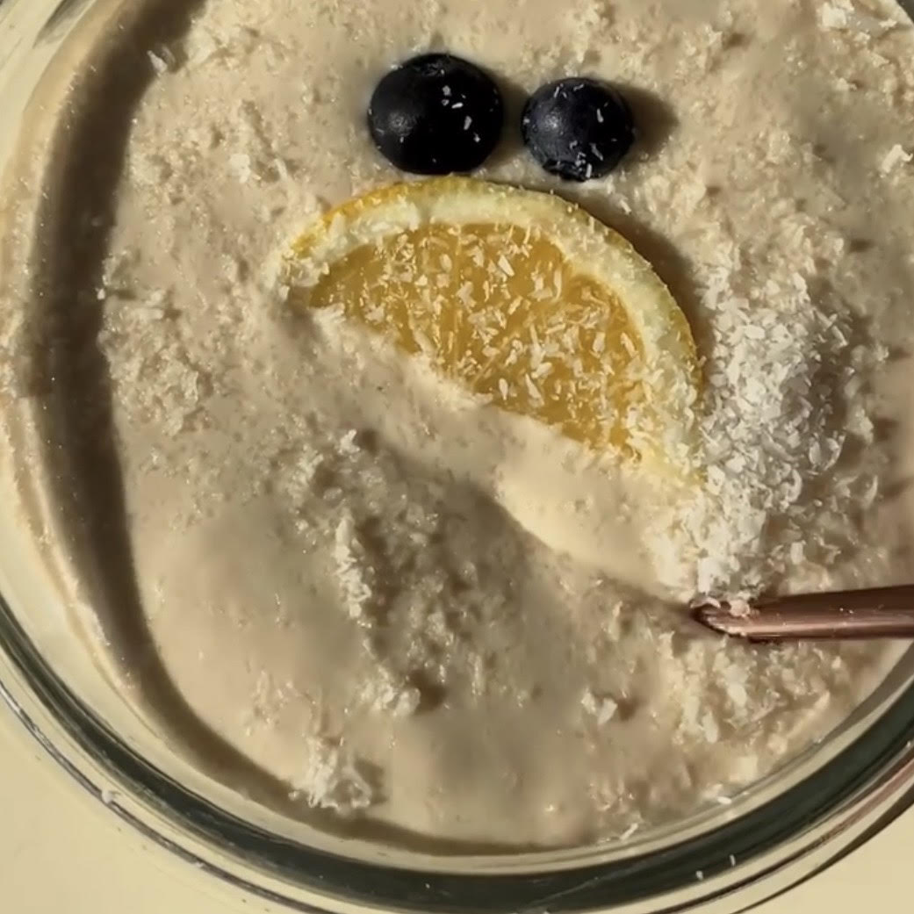

Lemon Cheesecake Oats

Description
Unexpected deliciousness! Oats with lemon cheesecake flavor... As a breakfast, for the office lunch bag or as a five o'clock tea snack!
Ingredients
- 7-8 tablespoons of oats
- 1 glass of milk
- 2 teaspoons of honey
- 1 tablespoon of chia seeds
- 1 cup of coconut powder
- Juice and zest of 2 normal sized lemons
- For the top, 1 cup of yogurt
- For the top, 1/2 cup of molasses
Steps
- Mix the first 6 ingredients well in a bowl and put it in the fridge overnight(or at least 3-4 hours).
- Mix the molasses and yoghurt and spread on top of the bowl.
- Decorate to your test with lemon slice, coconut powder etc.
Original recipe and video @foodierenn on Instagram